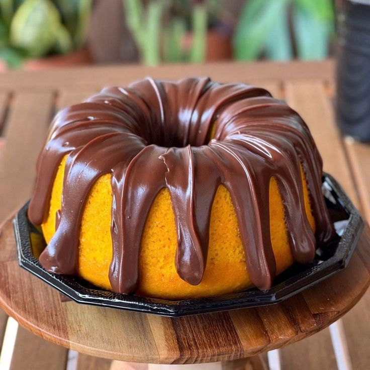

Bolo de Cenoura com Chocolate
Um bolo fofinho de cenoura, coberto com chocolate derretido, perfeito para lanches e sobremesas irresistíveis.

Ingredientes
Rende 12 pedaços
- 3 cenouras médias raladas
- 4 ovos
- 1 xícara de óleo
- 2 xícaras de açúcar
- 2 e 1/2 xícaras de farinha de trigo
- 1 colher de sopa de fermento em pó
- 200g de chocolate meio amargo ou ao leite (para cobertura)
- 2 colheres de sopa de manteiga (para a cobertura)
Modo de Preparo
Tempo estimado: 50 minutos
- Preaqueça o forno a 180 °C e unte uma forma com manteiga e farinha.
- No liquidificador, bata as cenouras, ovos e óleo até formar uma mistura homogênea.
- Despeje em uma tigela e adicione o açúcar, a farinha e o fermento, misturando delicadamente.
- Coloque a massa na forma e leve ao forno por 35 a 40 minutos, ou até que um palito saia limpo.
- Para a cobertura, derreta o chocolate com a manteiga em banho-maria ou micro-ondas e despeje sobre o bolo ainda morno.
- Deixe esfriar e sirva.
Dica do Chef: Para deixar o bolo ainda mais gostoso, adicione nozes picadas ou granulado de chocolate sobre a cobertura.